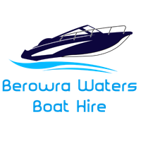

BETATools
Marina
Support
This product is based on Bureau of Meteorology information that has subsequently been modified. The Bureau does not necessarily support or endorse, or have any connection with, this product. Tide times shown are for Dangar Island (nearest official reference point) and are predictions only — actual conditions may vary. Not to be used as the sole basis for navigation decisions.
Live forecast from the Australian Bureau of Meteorology.
This app is currently in beta testing. This disclaimer is a draft pending review by Berowra Waters Boat Hire's solicitor and is subject to change.
This app is intended for general orientation and information purposes only. It is not a certified navigational aid and must not be relied upon as your sole source of information for navigating any waterway. Always exercise caution, maintain a proper lookout, and follow the safety briefing provided at the time of hire.
This app displays information sourced from third parties, including Transport for NSW (Maritime NSW open data), the Bureau of Meteorology, OpenStreetMap, and the NSW Department of Customer Service (Spatial Services aerial imagery). Berowra Waters Boat Hire does not create, verify, or control this data and cannot guarantee its accuracy, completeness, or currency. Each data provider's own disclaimers apply to their respective data as displayed within this app.
Your device's GPS position shown in this app is provided by your device's own hardware and operating system. Location accuracy may be reduced in narrow gorges, near cliffs, under bridges, or in areas with poor satellite visibility or mobile signal. Do not rely on GPS positioning alone for critical navigational decisions.
Tide predictions, weather information, and any related data shown in this app are predictions only, based on average conditions. Actual conditions may vary due to wind, rainfall, barometric pressure, or other factors. This information should not be the sole basis for decisions about whether it is safe to be on the water.
To the maximum extent permitted by law, Berowra Waters Boat Hire excludes all liability for any loss, injury, damage, or cost arising directly or indirectly from the use of, or reliance on, this app or any information displayed within it. This app does not replace the responsibilities of the vessel operator, who remains solely responsible for the safe operation of the hired vessel at all times.
This app depends on your device's GPS, internet connectivity, and battery. Berowra Waters Boat Hire does not guarantee the app will be available, accurate, or functional at all times, including while on the water where connectivity may be limited or unavailable.
By using this app, you acknowledge that you have read and understood this disclaimer, and that Berowra Waters Boat Hire's standard hire agreement terms and conditions continue to apply in full.
This app is a general information tool and is not a certified navigational aid. Tide, weather, GPS position, and map data are provided for guidance only and may not always be accurate or up to date. Always follow your safety briefing and use your own judgement on the water.
If you're in genuine danger, call for help. Otherwise, send your location to the marina and we'll assist you.
If you're in genuine danger, call for help. Otherwise, send your location to the marina and we'll assist you.